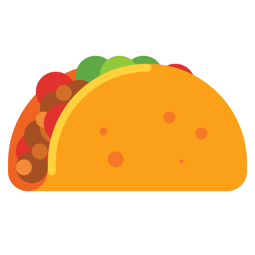

¡Encuentra una variedad de taquitos!
Sabroso taco de cerdo marinado con especias, asado verticalmente.

Suaves trozos de cerdo fritos, un manjar tradicional mexicano.

Carne de res cocida a fuego lento, jugosa y sabrosa.

Carne de chivo en caldo especiado, un festín de sabor.
Jugosos trozos de pollo sazonados y asados a la parrilla, a menudo acompañados de guacamole.
Finas lonchas de lengua de res cocida a la perfección, con cebolla y salsa verde.
Filetes de pescado fresco, empanizados y fritos, servidos con repollo rallado y salsa de crema.
Salchicha de cerdo condimentada, frita y desmenuzada, con papas o cebolla.
Camarones a la parrilla o fritos, con aderezo de ajo y cilantro acompañados de especias.
Carne de cerdo marinada en achiote y jugo de naranja, cocida a fuego lento y desmenuzada.
Ternera cocida lentamente en su propia grasa, resultando en carne tierna y sabrosa.
Trozos crujientes de piel de cerdo fritos y sazonados con salsas picantes.